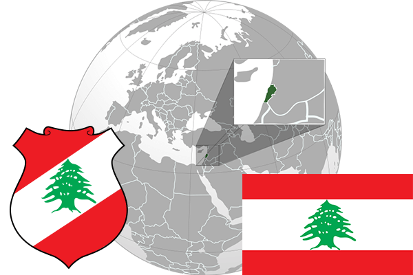

To`liq nomi: Livan Respublikasi
Region: G`arbiy Osiyo
Qonunchilik shakli: Respublika
Mustaqillik kuni: 22-noyabr 1943-yil (Fransiyadan)
Poytaxt: Bayrut
Maydoni: 10 452 km² (dunyoda 161 -o`rinda )
Chegaradosh davlatlari: Estoniya, Rossiya, Belorus, Litva
Aholisi: 6,006,668 (dunyoda 112 - o`rinda, 2016 -yil roʻyxat)
Aholi zichligi: 560/km²
Aholining o`rtacha yoshi: 73,25 yil (75,8 ayollar, 70,7 erkaklar)
Rasmiy tili: Arab tili
Dini: 57% musulmon, 43% xristian
Pul birligi: Livan Funti
Telefon prefiksi: +961
Internet domen: .lb
Xalqaro tashkilotlarga a`zoligi: BMT (1945 – yildan), Arab Davlatlari Uyushmasi (1945-yildan)
Dengiz va okeanlarga chiqishi: O`rtayer dengizi
YIM: Butun: $ 88.786 mlrd, Jon boshiga $ 19,128 (2017 - yil roʻyxati)
Yirik shaharlari: Tripoli, Bayrut, Sayda, Baabda, En-Nabatiya